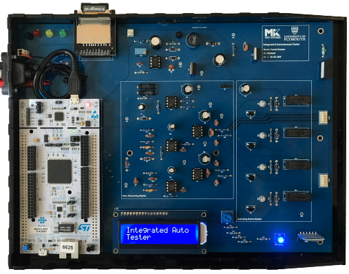
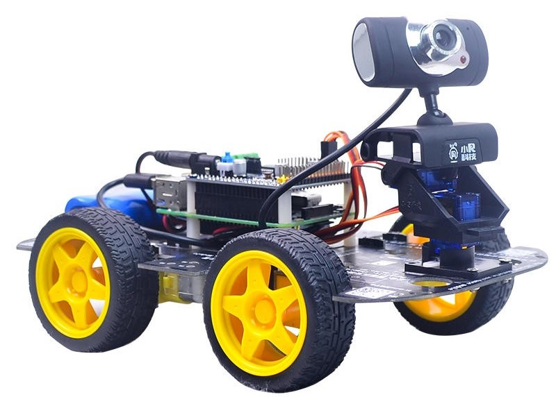
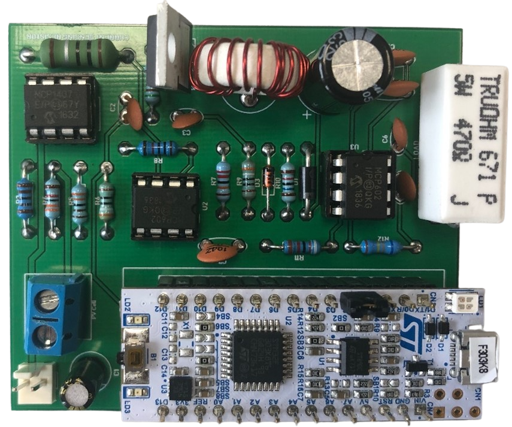
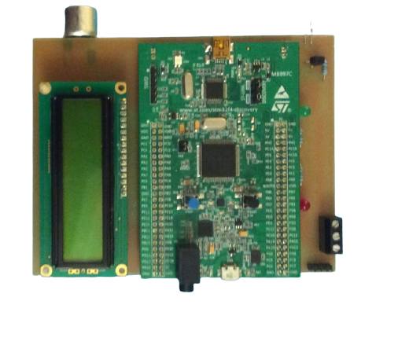

Integrated Autonomous Tester (IAT)
IAT is a real-time scanning system that conducts effective test routines on electrical harnesses.
The unit consists of an Auto-Measuring Module, Switching-Matrix Module and Information-Display Module. The system used an
ARM Cortex-M4 microcontroller which runs a multithread OS and transfers results via Bluetooth LE protocol to a portable module.

Inf-Display Module
The Inf-Display Module is a handheld unit that uses an ARM Cortex-M4 microcontroller to initialise a
Bluetooth module and a high-resolution 2.8-inch TFT LCD. AT Commands were implemented to modify the default settings of the
master/client Bluetooth modules. The portable module autonomously paired with the IAT system and displayed test results.

Ball Tracking Robot
A 4-wheel bot with a camera that takes frames at deterministic intervals to determine the shape, size
and colour of opposing objects. Using image processing the bot identified and tracked down
all balls coloured orange. VHDL was used to implement the tracking algorithm.

Maximum Power Point Tracking
(Renewable Energy)
Designed a digitally controlled Boost converter and implemented the Perturb and Observe algorithm to
increase the photovoltaic panel efficiency by allowing the system to operate at the unique point that supplies
the maximum available power despite fluctuations in environmental conditions.

Finite Impulse Response (FIR) Digital Filter
Designed a real-time digital (FIR) filter using an STMF303K8 microcontroller.
The Digital Signal Processing system output was connected to a PC LINE-IN port. At which, a
MATLAB script captured and analysed the digital filter response and characteristics.

Ultrasound & Infrared
Full Duplex Communication System
The project consisted of 2 independent modules that communicate over a distance using RF signals.
Each module contained an STM32F407G microcontroller and analogue circuits to Transmit/Receive. Module A transfers
data using an IR transmitter and collects messages via an Ultrasound receiver circuit that acts as a narrowband filter.
Module B vice versa.
Blackjack Card Game
Designed and developed Blackjack Card Game using Python. The game allows a human user to play against a computer dealer.

Analyse & Visualise data
Python libraries Numpy, Pandas, Matplotlib and Seaborn were used to extract, cleanse, transform, enrich and visualise Dial Direct
(a car insurance company) data to reveal insights and determine their loyal customer's age band, vehicle manufacturer and socio-demographic.